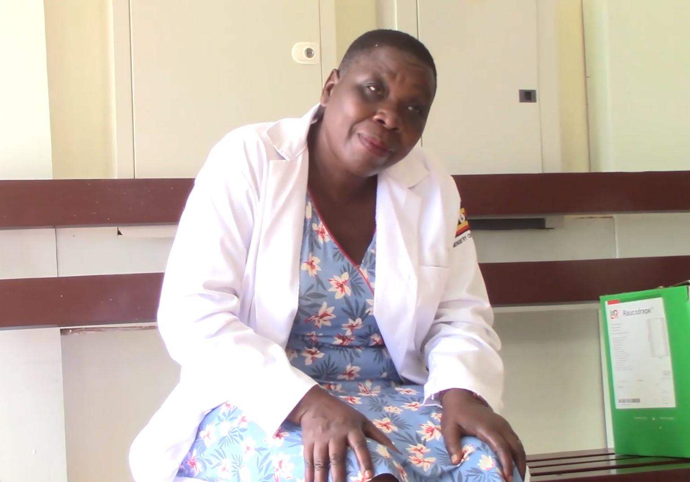
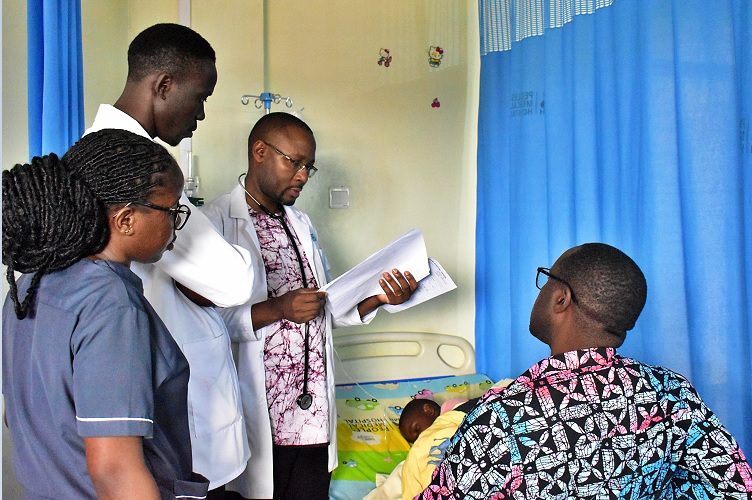

‘GIVE TO GAIN’: Medical Camp Sparks Joy with Painless Labour Innovation
 Dr. Frank Ndugga (in medical coat) engaging with women during the International Women’s Day health outreach.
Dr. Frank Ndugga (in medical coat) engaging with women during the International Women’s Day health outreach.
GAYAZA — In a powerful celebration of International Women’s Day, People’s Medical Hospital Gayaza transformed from a standard healthcare center into a beacon of hope for hundreds of women in Kasangati Town Council.
The event, themed "Give to Gain," saw Dr. Frank Ndugga lead a team of dedicated medical experts and specialists to provide a suite of life-saving services, including cervical cancer screening, family planning guidance, and HIV testing.
⭐ The Big Reveal: Painless Labour
The highlight of the day was the announcement of the hospital's new Painless Labour service. Dr. Frank Ndugga informed Enjuba Ya Kasangati that this innovation is designed to fulfill a dream every expectant mother shares: a delivery experience free from the traditional agony of childbirth.
Debunking Myths: "It's Not Witchcraft"

Dr. Sarah Mwesigwa addressing women on reproductive health myths and facts.During a detailed mentorship workshop, Dr. Sarah Mwesigwa addressed the cultural stigmas that often hinder women's health. She noted with concern that many reproductive complications are often misdiagnosed by communities as "witchcraft," leading families to waste resources on ineffective treatments while serious issues like fallopian tube damage go unaddressed.
"Seek proper medical help before it is too late," Dr. Mwesigwa urged. "Understanding your body is the first step toward healing."
— Dr. Frank Ndugga, Host & Lead Physician
The Golden Rules for Expectant Mothers
Dr. Frank highlighted that high maternal mortality is often linked to blood loss and sepsis (infections) during birth—issues that can be prevented with professional care. He outlined critical steps for every woman:

Dr. Frank Ndugga attending to a child patient (File Photo).The impact of the camp was immediate. One beneficiary, her face lit with relief, shared her gratitude with our reporters:
"I didn't know many of these things, especially about the screenings. But I am most thrilled about the painless labour service—it's a total game-changer for us women!"
As the "Give to Gain" camp concluded, the message was clear: at People's Medical Hospital, International Women's Day isn't just about a date on the calendar—it's about a permanent commitment to safer, happier motherhood.